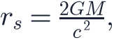
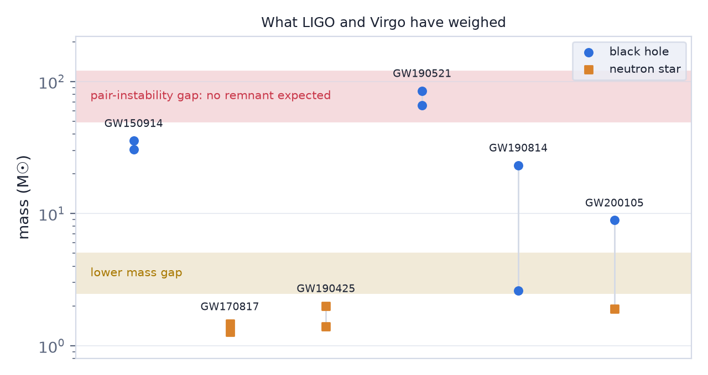
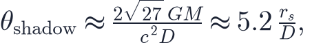
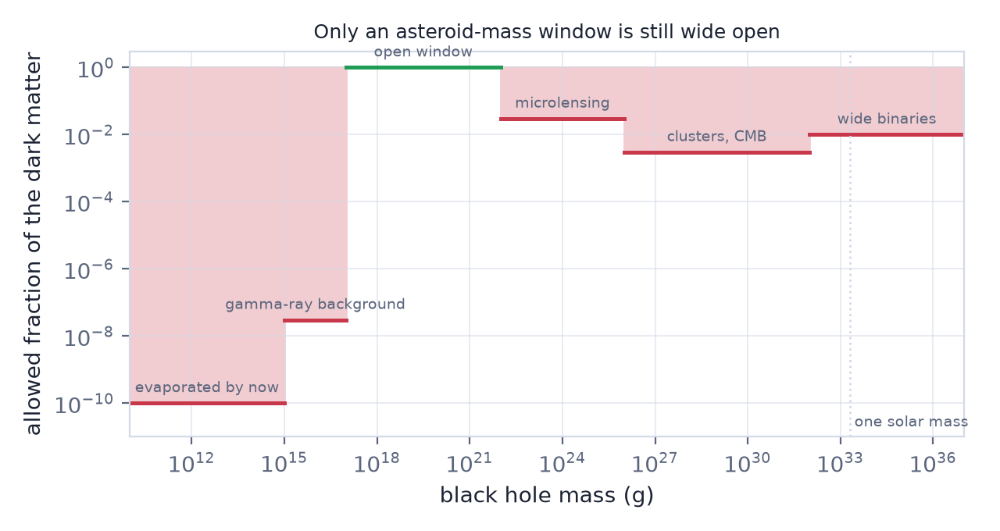
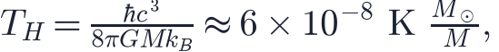

In this lesson you will learn
|
An object made of geometry
A black hole is not made of anything. It is a region of spacetime curved so steeply that every future-pointing path leads inwards. The boundary is the event horizon, and for a non-rotating hole it sits at the Schwarzschild radius

3 km for the Sun, 30 km for a 10 M☉ stellar remnant, and 1.2×10¹⁰ km — about 80 astronomical units — for the 4×10⁶ M☉ hole at the centre of our Galaxy. Note the scaling: , so the density inside falls as . A supermassive black hole is not dense; a 10⁹ M☉ hole has a mean density below that of water.
Real black holes rotate, and a spinning one is described by the Kerr metric with just two numbers: mass and spin. That is the whole description. Nothing else about what fell in survives.
Two numbers A black hole in equilibrium is completely specified by its mass and its angular momentum (and, in principle, charge, which is always neutralised in practice). This is the "no-hair" theorem, and it is what makes black holes useful: they are standardised objects, not messy astrophysical ones. |
The population LIGO found
Before 2015 we knew of about twenty stellar-mass black holes, all in X-ray binaries, all between 5 and 20 M☉. Gravitational waves (L6.5) changed the census completely: the catalogue now holds roughly a hundred mergers, and the black holes in them are heavier than anyone expected. GW150914 involved holes of 36 and 29 M☉ — heavier than any then known.
The mass distribution has structure, and the structure is informative:
- A gap below about 3 M☉. Nothing between the heaviest neutron stars and the lightest black holes, or very little. Whether it is real or a selection effect is still argued about.
- A gap between roughly 50 and 120 M☉. This one is predicted. A star with a helium core in that range undergoes pair instability: its core is hot enough that photons convert into electron–positron pairs, the pressure support drops, the core collapses and ignites explosively, and the star is blown apart leaving nothing behind.
- GW190521, with a 85 M☉ component, sits inside that forbidden gap. Either the pair-instability calculation is off, or that hole was itself made by an earlier merger — a hierarchical black hole, which would point to a dense cluster where such things can happen.
What a merger rate tells you The rate of black-hole mergers per unit volume — a few tens per Gpc³ per year — is a statement about how massive stars end their lives and how often they come in pairs close enough to spiral in within the age of the universe. It is stellar physics, measured cosmologically. |

The giants, and where they came from
Every massive galaxy has a supermassive black hole at its centre, between about 10⁶ and 10¹⁰ M☉. Ours is Sgr A*, 4.3×10⁶ M☉, weighed by watching individual stars orbit it for thirty years — work that won the 2020 Nobel Prize.
The masses are not random. They track the velocity dispersion of the surrounding stars through the M–σ relation, , a remarkably tight correlation between an object a few AU across and a galaxy a hundred thousand light years across. Something coupled their growth — most likely the energy the growing hole dumps back into the gas, which shuts off its own food supply and the galaxy's star formation together. That feedback is now a standard ingredient of every galaxy-formation model, including the ones in L7.5.
And then there is the problem.
The seed problem Quasars powered by holes of 10⁹ M☉ are observed at z > 7, when the universe was less than 800 million years old. Growing that from a 100 M☉ stellar remnant takes about 800 million years even at the Eddington limit, the rate at which radiation pressure from the infalling gas stops any more from falling in. There is no time to spare, and no time at all if growth is ever interrupted. |
Three ways out, none confirmed:
- Super-Eddington accretion. If gas is funnelled in faster than the simple limit allows — plausible if the radiation escapes along the poles — growth is quicker.
- Direct-collapse seeds. A pristine gas cloud that never forms stars could collapse straight to a 10⁴–10⁵ M☉ black hole. It needs finely tuned conditions.
- Primordial seeds. Black holes that existed before the first star, which is the next section.
JWST has sharpened the problem rather than solving it, finding early galaxies whose central holes are an unusually large fraction of their stellar mass.
Photographing a shadow
In 2019 the Event Horizon Telescope published an image of M87, a 6.5×10⁹ M☉ hole 55 million light years away; Sgr A followed in 2022. The technique is very-long-baseline interferometry: radio dishes across the planet observe together, and the resolution is set by their separation — an Earth-sized telescope, resolving 20 microarcseconds.
What the image shows is not the event horizon. It is the shadow: the dark region where light rays, traced backwards from the observer, end on the horizon rather than escaping. General relativity predicts its angular diameter to be

so the shadow is about two and a half times wider than the horizon, and — crucially — depends only on M and D. Measuring it is a test of the metric, and so far the result matches Kerr.
Why those two M87 is enormous but far; Sgr A is small but close. Their shadows happen to be almost the same angular size, and they are the only two large enough to resolve. Sgr A* was the harder one: the gas orbits it in minutes rather than days, so the source changes while you are looking at it. |
Primordial black holes
Every black hole discussed so far came from a star. But a black hole only needs enough mass inside its own Schwarzschild radius — and in the very early universe, when the density was enormous, that was easy to arrange.
If a region collapses when the horizon mass is , the black hole it leaves has roughly that mass, and the horizon mass at time t is
So a black hole forming at s weighs about a gram; at  s, about a
solar mass; at 1 s, 10⁵ M☉. The mass of a
primordial black hole is a clock reading of when it formed.
s, about a
solar mass; at 1 s, 10⁵ M☉. The mass of a
primordial black hole is a clock reading of when it formed.
Making one requires a density fluctuation of order δ ≈ 0.45 at horizon crossing — enormous compared with the 10⁻⁵ we measure in the CMB. So the primordial power spectrum would need a sharp feature on small scales, which some inflation models happily provide and which nothing currently rules out, because scales that small are not otherwise observable.
Could they be the dark matter?
It is a tempting idea: no new particle needed, and the LIGO black holes arrived earlier and heavier than expected. But the windows have been closing:
| Mass | Constraint | Why |
|---|---|---|
| < 10¹⁵ g | evaporated already | Hawking radiation, see below |
| 10¹⁶–10¹⁷ g | gamma-ray background | evaporating now, we would see the photons |
| 10²³–10²⁶ g | microlensing (Subaru, OGLE) | would brighten background stars |
| 1–100 M☉ | CMB spectral distortions, wide binaries | accretion in the early universe heats the gas |
| > 100 M☉ | dynamics of star clusters | would disrupt them |

A narrow asteroid-mass window around 10¹⁷–10²² g survives, and the stellar-mass one is constrained to well under a percent of the dark matter — enough to matter for merger rates, nowhere near enough to be all of it.
A real, if partial, success Primordial black holes remain the only dark-matter candidate made of physics we already know. That is worth something even if they turn out to be a small component. |
Hawking radiation, and why it rarely matters
Quantum field theory in curved spacetime says a black hole radiates thermally at

which for any astrophysical hole is far colder than the 2.7 K CMB. A stellar-mass black hole therefore absorbs far more than it emits, and will keep doing so until the CMB has cooled below 10⁻⁷ K, in about 10¹⁷ years.
Evaporation takes years for a solar mass — utterly irrelevant. It matters only at the other end of the scale: a black hole of 10¹⁵ g, about the mass of a mountain, has a lifetime of roughly the current age of the universe. Those are exploding now, if they exist, and the gamma rays they would produce are exactly the constraint in the table above. No such burst has been seen.
Hawking radiation is not a cosmological energy source For everything we can observe, black holes only grow. Evaporation is a statement about the far future, and an observational constraint on very small primordial holes. |
Black holes as cosmological tools
Finally, the reason black holes belong in a cosmology course at all:
- Standard sirens. A merger gives its own luminosity distance with no calibration (L6.5) — the subject of S22.
- Tests of the metric. Ringdown frequencies after a merger, and the shape of the EHT shadow, both test whether the geometry really is Kerr.
- Accretion as a clock. Quasar luminosities trace when gas was available, which ties black-hole growth to the history of galaxy formation.
- Feedback. Without energy injected by growing black holes, simulated galaxies form far too many stars. The largest structures in the universe carry the imprint of objects a few AU across.
Try it: Standard Siren Explorer A black-hole siren. Set both masses to 30 M☉ and the distance to 500 Mpc. The signal is loud — but with no kilonova there is no host galaxy, and the H₀ measurement falls apart. That is the difference between a black-hole merger and a neutron-star one. |
Remember this
|